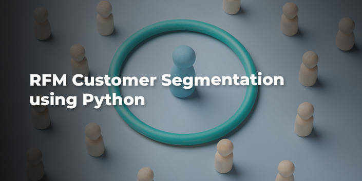
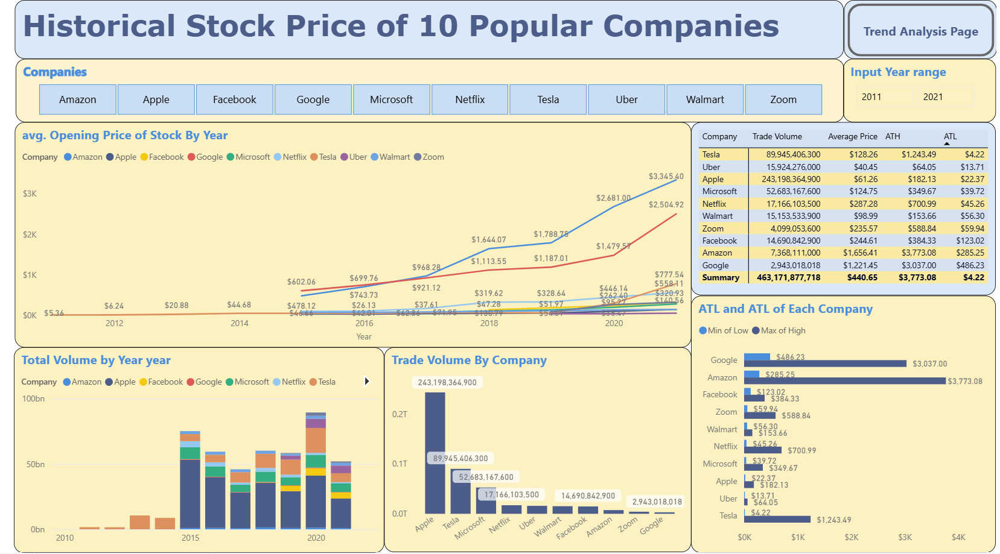
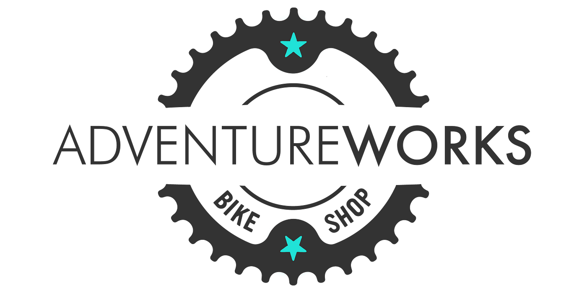
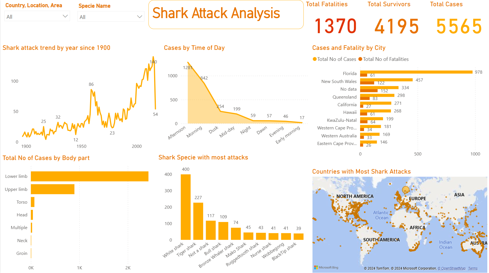
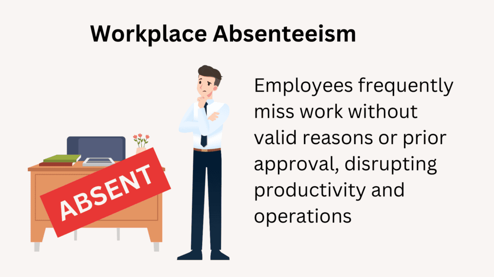
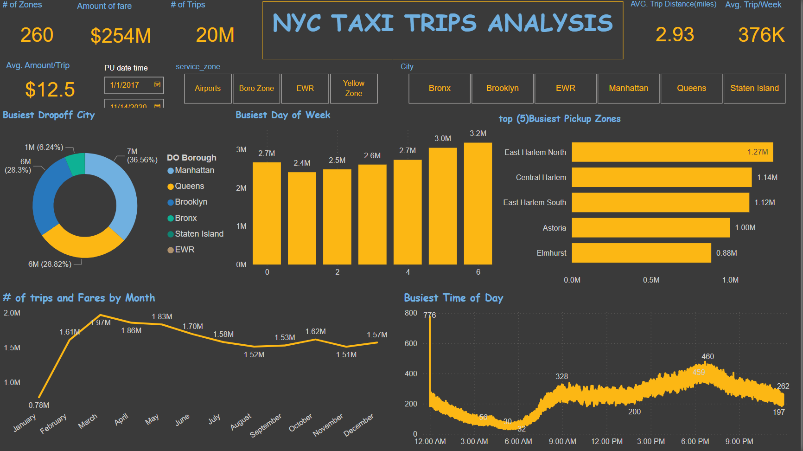
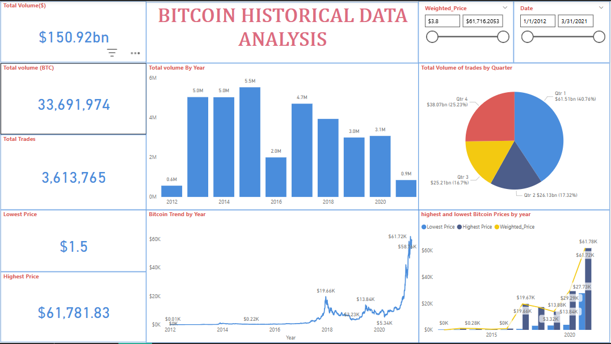
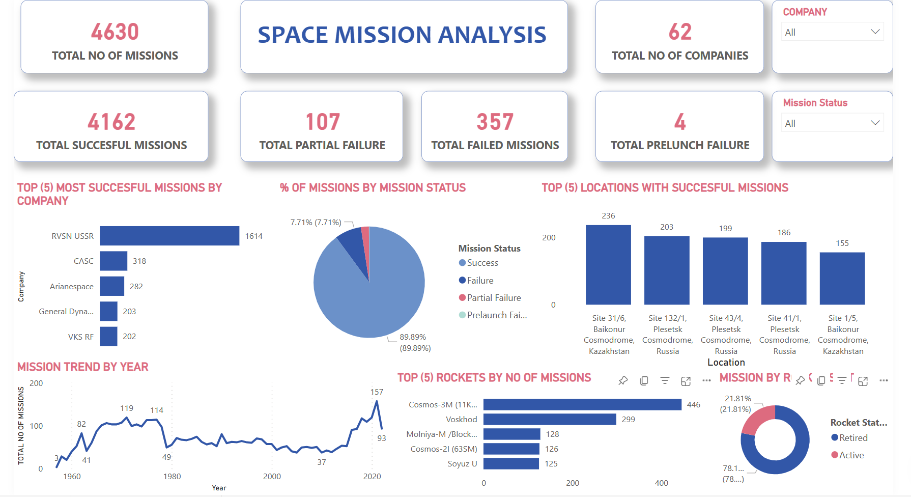
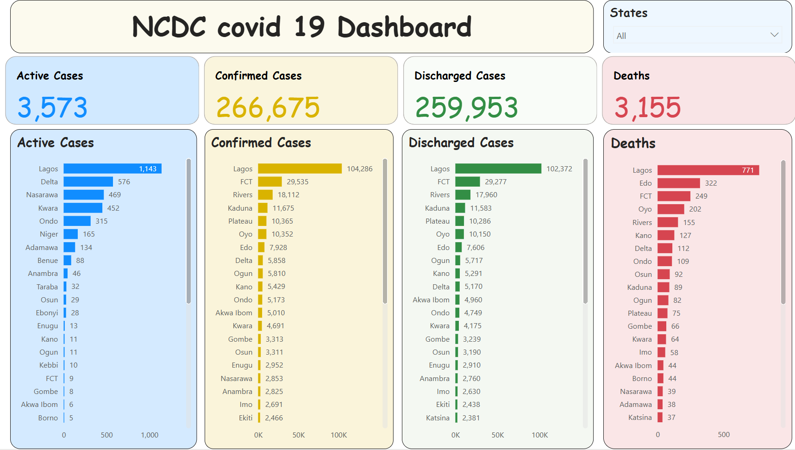

Karo Majesty Onoriose
About
As a dedicated and detail-oriented Data Analyst, I bring a robust skill set in various data analysis tools and techniques. My expertise includes Microsoft Excel for efficient data manipulation and analysis, Tableau for creating insightful visualizations, and Data Modelling to structure and interpret complex datasets. I am proficient in Microsoft Power BI for interactive data reporting and Database Management to ensure data integrity and accessibility. I excel in Data Cleaning to maintain high-quality datasets and use Python for Data Science to perform advanced analytics and machine learning. My experience with Data Warehousing allows me to manage and retrieve large volumes of data efficiently. Additionally, I am skilled in SQL/MSSQL for querying databases and Data Manipulation to transform raw data into actionable insights. My ability to create compelling Data Visualizations helps stakeholders make informed decisions based on clear and concise data presentations.
Data Analyst/ BI Analyst
- Phone: +234 916 709 1342
- City: Lagos , Nigeria
- Email: Onoriosekaro@gmail.com
- Freelance: Available
Skills
Programming & Database
- Python: Pandas, NumPy, Matplotlib, Seaborn
- SQL: MSSQL, MySQL, Database Management
- ETL: Data Integration, Data Pipelines
- DAX, Power Query,Mcode
Methodologies & Concepts
- Exploratory Data Analysis (EDA)
- Statistical Analysis
- Trend Identification
- Key Performance Metrics Analysis (KPIs)
- Automation(Excel, python)
Data Quality & Governance
- Data Cleaning
- Data Profiling
- Data Validation
- Data Governance
- Data Modelling
- Data Collection(web Scaping)
- Data manipulation
BI & Visualization
- BI Tools:Microsoft Power BI (),Microso Tableau
- Visualization: Dashboard & Report Development, Data Storytelling
- Analytics: Google Analytics, Web Analytics
Soft Skills
- Critical Thinking & Problem-Solving
- Communication & Presentation Skills
- Stakeholder Engagement & Collaboration
- Attention to Detail
- Time Management
Portfolio
Explore my portfolio to see how I leverage data to optimize operational efficiency and support Company growth. Let’s connect and discuss how I can contribute to your organization’s success!.
- All
- Power Bi
- Tableau
- Python
- SQL
- Excel


.png)















{kind=link}
{kind=link}

{kind=link}

{kind=link}
Services
I help organizations unlock the full potential of their data. From cleaning and transforming raw datasets to designing sleek dashboards and drawing actionable insights—these are the services I provide as a data analyst.
Data Cleaning and Wrangling
Transforming raw, messy datasets into structured, analysis-ready formats using Power Query, Excel, and Python (pandas).
Data Visualization (Interactive Dashboards)
Designing powerful, in dashboards with Power BI, Tableau, Excel and Charts with python to visualize business KPIs and trends in real time
Business Reporting
Creating polished, executive-friendly reports in PowerPoint, Excel, and PDF formats—with data pipelines powered by SQL and Python.
Exploratory Data Analysis
Identifying patterns, trends, and hidden insights in data using Python (pandas, matplotlib, seaborn) and Excel pivot tools.
Database Management
Writing optimized SQL queries, managing relational databases, and integrating with PostgreSQL, MySQL, SQLite, and cloud platforms.
Web Scraping
Extracting structured data from websites using Python libraries like BeautifulSoup, Selenium, and Requests for custom dashboards and analysis.
Insights & Decision Support
Translating complex datasets into clear business recommendations with visualizations and written narratives.
Predictive Analysis
Building regression, classification, and time-series models using Python (scikit-learn, statsmodels) to forecast trends and business outcomes.
Excel & Python Automation
Automating repetitive tasks and workflows using Python ( pandas), Excel macros, and VBA scripting for efficient reporting.